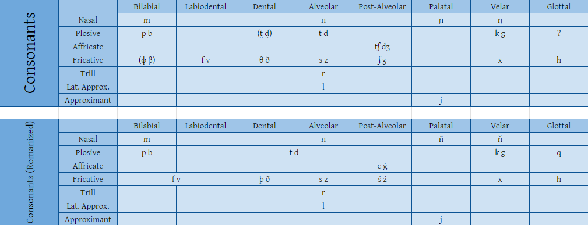
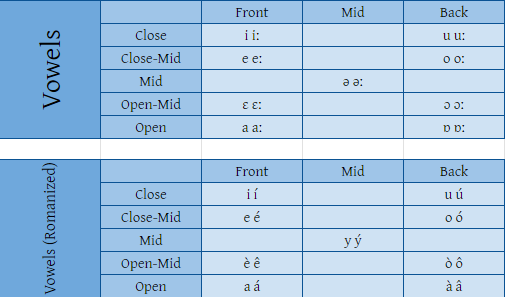

Phonology and Orthography
Consonants
Atinú has 26 consonants. They are:
Vowels
And there're 9 vowels, each having a long version (so 18 in total). They are:
(big thanks to @disco_n0stalgia on discord for making these graphs!)
Alphabet Order
Atinú's alphabet order/song(?) is in two parts:
- i í
- e é
- è ê
- a á
- y ý
- u ú
- o ó
- ò ô
- à â
- my ny ño ňa
- py by ko ga
- ty dy þo ða
- fy vy so za
- cy ġy śo źa
- xy hy qo ja ry ly
Grammar
Phonotactics
Atinú's syllable structure is (C)(C)V(C)(C), where:
- C = consonant
- V = vowel
Atinú's phonotactics are pretty simple, but there are some rules to follow:
-
some clusters are illegal, heres an image that shows the legal clusters
- GREEN: legal clusters
- YELLOW: coda clusters
- RED: illegal clusters
- double clusters are illegal, they must be broken up by a <q> (example: nn, aa ❌, nqn, aqa ⭕)
- <ñ> always needs to be followed by a vowel
Plurality
Atinú has three ways of showing how many of something there is:
- SINGULAR: ∅
- PAUCAL (a few of): -lò (-òl if the last letter is a consonant)/li>
- PLURAL: -se (-ses if the last letter is a consonant)
Examples:
SINGULAR: ito (human), sakano (fish), tomośuk (house)
PAUCAL: itolò (a few humans), sakanolò (a few fish), tomośukòl (a few houses)
PLURAL: itose (humans), sakanose (fish), tomośukes (houses)
Pronouns
| 1st Person | 2nd Person | Animate 3rd | Inanimate 3rd | |
|---|---|---|---|---|
| Singular | mi | ti | lo | síe |
| Plural | nos | vos | los | síep |
Cases
There're 8 cases:
- NOMINATIVE: ∅
- DATIVE: a-
- GENITIVE: no(of) [possessor]
- ACCUSATIVE: -òf (-lòf if last letter is a vowel)
- INSTRUMENTAL: sa(with)
- DIMINUTIVE: -ili (-lili if last letter is i or í)
- AUGMENTATIVE: bá- (báq- if first letter is a or á)
- VOCATIVE: ó! oi! ei!
Tenses
There're 3 tenses:
- PRESENT: ∅
- PAST: -eþ
- FUTURE: śilus a (going to)
Aspect
Atinú has 3 aspects:
- PERFECTIVE: ∅
- PROGRESSIVE: -us
- HABITUAL: ebo-
Mood
There're 3 moods:
- IMPERATIVE: údo-
- SUBJUNCTIVE: ví-
- INDICATIVE: ∅
Articles
Atinú has 2 articles:
- THE: di
- A/AN: yn
Syntax
Atinú's syntax is:
- WORD ORDER: SVO
- ADJECTIVE: noun-like
- ADPOSITIONS: prepositions, verb-like
- POSSESSEE > POSSESSOR
- AUX VERB > VERB
Valency-Changing Operations
There're 2 valency-changing operations:
- PASSIVE: ben (to be)
- CAUSATIVE: dòźi (to cause)
Word formation
| Noun | DAT- | AUG- | baseform | -GND | -PLUR | -DIM |
|---|---|---|---|---|---|---|
| Verb | MOD- | HAB- | baseform | -PRG | -TNS |